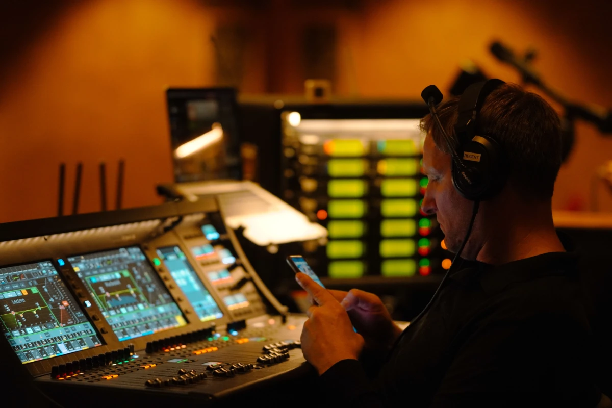

Podcast
Inside the Studio

Explore the conversations and creative process behind audio storytelling.
PARROT MEDIA HUB
Explore conversations, broadcasts, interviews, and live experiences from the world of Parrot Media.
THE COLLECTION
Showing all four features.
Podcast
Explore the conversations and creative process behind audio storytelling.
Broadcasting

Discover the preparation and production that bring broadcast stories to audiences.
Interviews

Thoughtful questions and fresh perspectives bring people and ideas together.
Live events

Explore the presentation and energy that make live events engaging.